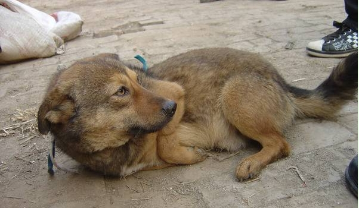
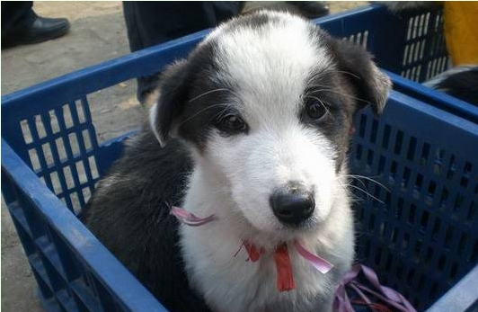
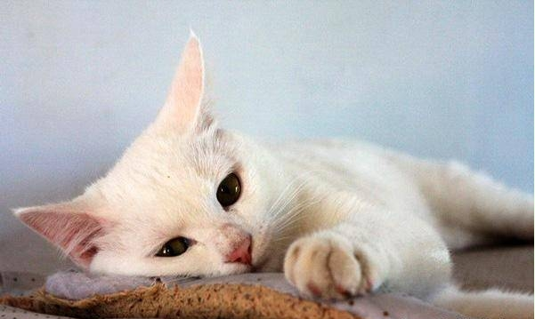

我们需要更多的爱



“红
蒋宏和陈运莲两位女性都曾是商场上的女强人，干练、开朗，有着自己的事业和不错的经济条件。善良的她们，如今都成了伴侣动物救助者。这是一条艰难的路，幸好还不算孤独。她们和来自各行各业的志愿者们一起，为那些不会说话的动物苦苦坚持。
一直在等你
汶川地震，那场灾难掩埋的不仅仅是
那次，陈运莲带着志愿者们参与救灾，在震后的一片废墟下，见到一只小土狗固执地趴在一堆旧衣服上不肯离开。周围的邻居说：“是那户人家的看门狗啊，地震了，主人一家都遇难了，这狗就是守着家不肯走。主人的尸体运走了，只剩下这些旧衣服，它也不让人碰，我们想领过来养，它就是不来。前几天有人想打死它，它逃了几天，回来还是找这些衣服。”小家伙虚弱至极，把鼻子深深地埋在旧衣服里，或许那里还有它的家人最后的一点点气息。它守着废墟很久了，凭着灵敏的鼻子，应该早就知道它的主人已经去了，再也不会回来了，它还在这里等谁呢?为什么哪怕冒着被人打死的危险，还要守着这个崩塌的“家”呢?陈运莲靠近它，它没有咬她，或许它能感觉到这次的接近者与伤害它的人有不同的气场吧。它的后腿已经不能动了，估计是被棍棒击中了脊背。在剧痛和饥饿之中，它还是守着曾经的家，守着主人气味的旧衣服。
在“爱之家”，有一只被取名为“海狼”的德国牧羊犬，温顺聪明得好像一个小孩儿。它在一个大雨天被遗弃在火车站的检票口——当带着“海狼”的那个年轻男子得知狗不能进站后，就头也不回地直接进了检票口，没有再看它一眼。“海狼”以为主人只是暂时走开，一定还会再回来带它回家，傻傻地守候在进站口，脚掌焦急地踩踏地面。保安为了赶走它，用棍子猛抽，惨叫声传遍车站。其实，当时“海狼”正值壮年，要逃走是轻而易举的事。但是单纯的它只知道，是主人把它留在了这里，它要在这里等他回来。“海狼”怎么也不肯远离检票口，直到被打得浑身是血倒在地上。保安以为它死了，叫来清洁工清理尸体，这时，天灾下起了大雨，命大的“海狼”被雨水淋湿后，居然睁开了眼睛，大口大口地喘气。清洁工看不下去了，到处打听，好不容易找到了“爱之家”的联系方式。陈运莲冒着倾盆大雨从垃圾箱边接回了它，并给它取名“海狼”。
蒋宏女士说起那些不负责的饲主，永远没法淡定。大学周围，每年到了大学生毕业的时候，不法肉贩就纷纷出动，因为他们知道，大学生毕业了，养在寝室的宠物们就会被抛弃。不法肉贩带着麻袋到大学附近捕捉那些对人一点戒心也没有的小狗小猫。“这是无本的买卖呀!那些大学生看到小猫小狗可爱，随手买了就养，毕业了就一扔。这些小家伙哪里知道外面的险恶。”“红石榴”的志愿者有一次去西安细柳市场做宣传，看到很多狗在笼子里等待被宰杀，它们的嘴被铁丝捆住，脖子被勒住，其中有些明显是家里养大的宠物。看到有人来，那些宠物犬在笼子里一个劲儿地“拜拜”，眼里都是泪水。“它们知道这里满是杀气，也知道只有我们几个人不会伤害它们!好聪明啊!它们多么希望我们能把它们带走，但是我们能带走的只是少数。这些狗狗，有的是主人散步时没有牵住被偷走的，有的干脆就是主人自己卖过来的!”志愿者说。
有一次，蒋宏接到一位熟悉的兽医的电话，说一位老太太要求给她9岁的
每一只被遗弃的伴侣动物，都有这样一个相似的故事，正是它们的执著守信与他们的薄情寡义，让蒋宏和陈运莲这样善良的人不忍心再次放弃它们。她们或许是被这样一幕幕反差巨大的事件所触动，才投身了“伴侣动物救助”这个在中国被大多数人误解，甚至诋毁的工作。
谁的心病了
在距离西安市区50多公里的一片工业区荒地上，蒋宏和她的100多个“孩子”一起熬过了一个没有电、没有水的寒冬。这个工业区的开发半途而废，几个利益方正在商讨这片土地何去何从，因此这里半年前就断了水电，逐渐成为荒地。原先落户的少数几家企业相继搬走，而红石榴伴侣动物救助中心却无法搬走。因为救助中心不能离市区、居民区太近，要是因扰民而被投诉会很麻烦，而且毕竟太多的人对“伴侣动物救助”有着偏见和误解。
蒋女士的丈夫是一位成功的商人，他也爱狗，妆蒋宏开始做动物救助以后，他每月都在往中心贴钱。蒋宏家的私车从“宝马”换到“夏利”，客户与朋友和他们开玩笑说，你家的车怎么会“缩水”，别人都是越开越大，就你们家越开越小。“红石榴”离市区太远，没有抽水马桶，只有旱厕，住惯楼房的蒋宏也不介意。后来这儿断了水电，中心就买了个小发电机，为了节约燃料，每天晚上只发电两三个小时，连喝水都得请水车每天送上来。然而就是这样的地方，都无法长期安定，一旦这片土地的最终方向确定，救助中心就又得重新搬迁。
蒋宏建立红石榴伴侣动物救助中心之初，原本计划一边救助，一边开展领养，自己家的经济条件还可以，再加上一些社会捐助足可以应付。但没料到还是想得太简单了。最初他们想把中心收容的狗狗数量控制在100只左右，可是非常难控制，因为一直有人在抛弃。有好心人送来了受伤的动物，中心肯定得收下;而有的饲主则自己开车到中心，隔着墙头把麻袋甩进来，里面往往装着一窝狗仔、猫仔或是年老有病的动物。
与任意繁殖、随意抛弃的庞大数量相比，领养之路却很窄。每一只受到救助的伴侣动物都让救助者付出了很多感情和精力，他们不愿意让它们再次受到伤害。在很多欧美国家，当孩子提出要一个动物伙伴时，父母会带着孩子去当地的动物收容所领养走失后无人认领的小动物，无论血统怎样，只要它们本身友善就行。而在中国，还没有形成领养宠物的氛围，大多数有心养宠物的人，都会想到去宠物店购买，而养名猫、名犬的攀比风气使宠物行业乱繁殖的情况十分严重。大多数“纯种”猫犬，都是在条件极其恶劣的养殖场中近亲繁殖的后代，母体营养和
资金来源不稳定、选址难、动物数量多，已经成了国内大多数伴侣动物救助团体的难题。此外，这些动物救助机构还要顶着很多其他压力，最让人寒心的还是一些人的态度。尽管“爱之家”远离市区，有着正式的水泥犬舍、化粪池、围栏，尽量把对周围环境的影响降到最低，仍然经常有不理解他们的人前来刁难。有一次，有人故意在半夜开车到“爱之家”的犬舍外，大按喇叭，引得所有的狗狗吠叫。一开始陈运莲还没明白是怎么回事，后来才
过多的流浪动物，的确可能成为社会问题，这个问题的根本来源是不负责的饲主、盲目攀比炫富的风气，以及相应法规的缺失、执法手段的简单粗暴。解决这个问题自然不能只靠“红石榴”“爱之家”等全国各地的自发团体，但是他们至少已经开始思考、探索、行动。“生命不分贵贱”是伴侣动物救助圈内最常提到的一句话，他们需要最多的或许并不是资金，而是理解。
放弃还是坚持
目前“红石榴”收容的动物的数量是182只。而“爱之家”的动物数量已经超过1300只。
蒋宏是赞成按原则为车祸重伤和犬瘟末期等绝症动物“安乐死”的。很多年轻人赞同这种理念，年纪大一些的人就不理解。蒋宏说：“有些动物来的时候真的太
不仅在成都“爱之家”、西安“红石榴”。在上海、北京、广州……各地都有这样一些执著的人，一边尽自己的能力做着辛苦的救助，一边思考民间伴侣动物救助团体的未来，关注和推动动物保护、动物福利等相关法规的出台，并以各种方式宣传正确、科学的养宠理念。蒋宏说：“像我们这样的伴侣动物救助中心，应该是个告诉人们如何尊重生命的宣教中心，虽然其成果我们这一代可能看不到，但是或许我们的下一代就能够看到。我们曾经在小学开展孩子和动物的接触课，有一些家长向校方提意见：‘课外有空闲时间应该再补课，去和动物相处什么?多危险!’但还是有45%的家长和那些孩子都是人们理念进步的一个信号。人类已经很强大了，在强大的基础上，还应该学会爱。
这些小动物都非常可怜，这样的地方是不够他们强大的队伍的，他们需要更多人来关心和爱！